Release notes 26.3/ko
FreeCAD 26.3는 개발 중이며 예상 출시 날짜는 아직 미정입니다.
Are features missing? Mention them in the Release notes for v26.3 forum thread.
See Help FreeCAD for ways to contribute to FreeCAD.
All images on this page must use the _relnotes_26.3 suffix
FreeCAD 26.3 was released on D Month Year, get it from the Download page. This page lists all new features and changes.
Previous FreeCAD release notes can be found in the Feature list.
일반
- FreeCAD has adopted a new release schedule of three stable releases per year and switched to a CalVer versioning scheme (YY.N), starting with version 26.3. FEP-0003
- Multiple documents can now be edited simultaneously with independent tasks and undo/redo stacks, for example, having two Sketches open at the same time (GSoC project). Pull request #21978
- .FCBak backup files can now be opened directly from the File → Open dialog without renaming them to .FCStd first. Saving such a file triggers Save As… to prevent accidentally overwriting the backup. Pull request #28454
- The .FCBak backup date format preference now validates invalid filename characters and replaces invalid timestamp characters when creating backups. Pull request #25985
User interface
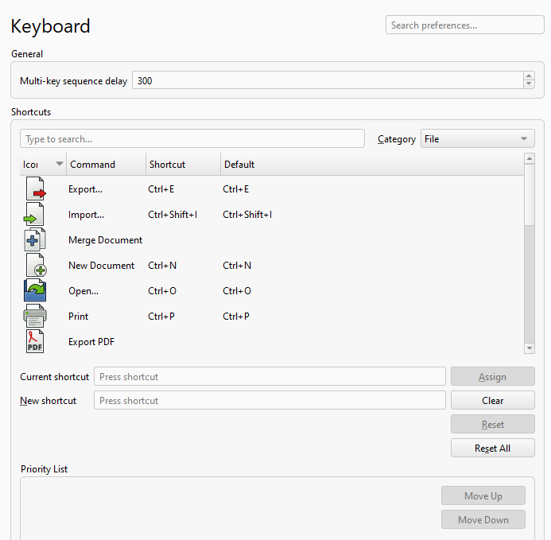 |
Customization of keyboard shortcuts was moved to the Preferences Editor. |
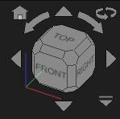 |
The Navigation Cube was improved, mostly in terms of appearance and functioning of its extra buttons. A home button was added. |
Further user interface improvements
- The built-in text editor now supports line selection via clicking on the line number (and optionally also holding Shift for range selection). Pull request #27677
- In the built-in text editor, the search field is now prefilled with the currently selected text. Pull request #27674
- Documents whose files are not writable now show read-only overlays in the Tree View, with tooltips explaining that changes cannot be saved directly. Links to read-only documents now use a red read-only link overlay. Pull request #26702
- Clicking the expand/collapse indicator in the Tree View no longer accidentally changes the current selection range. Pull request #29687
- Double-clicking a face of the Navigation Cube will now rotate to it, but also center the view. Pull request #28608
- The Recompute Object Tree View context menu option (Recompute command) now has a keyboard shortcut Ctrl+Shift+R. Pull request #27880
- There is now a
 Toggle Bottom Panels button and a shortcut Ctrl + O to toggle the bottom panels (Report View and Python Console). Pull request #28598
Toggle Bottom Panels button and a shortcut Ctrl + O to toggle the bottom panels (Report View and Python Console). Pull request #28598 - The
 Align to Selection command now supports multi-selection. Pull request #29182
Align to Selection command now supports multi-selection. Pull request #29182 - The 3D View now supports drag box selection in common navigation styles, with left-to-right window selection and right-to-left crossing selection. Pull request #29547
- Double-clicking on an expression field now clears the expression and keeps the current value. If no change is made, the expression is restored after losing focus. Pull request #29414
- SpaceMouse rotations now honor the active navigation rotation center mode, including Object center and Drag at cursor modes. Pull request #29998
- On macOS release builds, 3Dconnexion SpaceMouse devices now initialize correctly instead of reporting that the Navigation Framework is running outside an application bundle. Pull request #29465
- The VarSet Rename Property Group dialog now offers autocompletion for existing property groups, making it easier to move variables between groups. Pull request #30200
- There is now a warning when saving files created in older versions. A preference was added to allow disabling it. Pull request #28389
- Clearing the recent files list now asks for confirmation before the list is removed. Pull request #27274
- All Status Bar widgets can now be toggled through the context menu. Pull request #30349
- The built-in text editor received several improvements for search feedback. Pull request #29423
- It is now possible to suppress multiple objects at once. Pull request #30438
- An icon and shortcut were added for the Clear option in the context menu of the Python Console. Pull request #30551
- It is now possible to rotate the view by dragging the Navigation Cube. Pull request #30727
- The VarSet properties of the Percent type are now displayed with the percent suffix in the editor. Pull request #28730
- Selection and preselection colors were improved for better visibility and distinguishability. Pull request #31050
핵심 시스템과 API
핵심

|
A new command to add an |
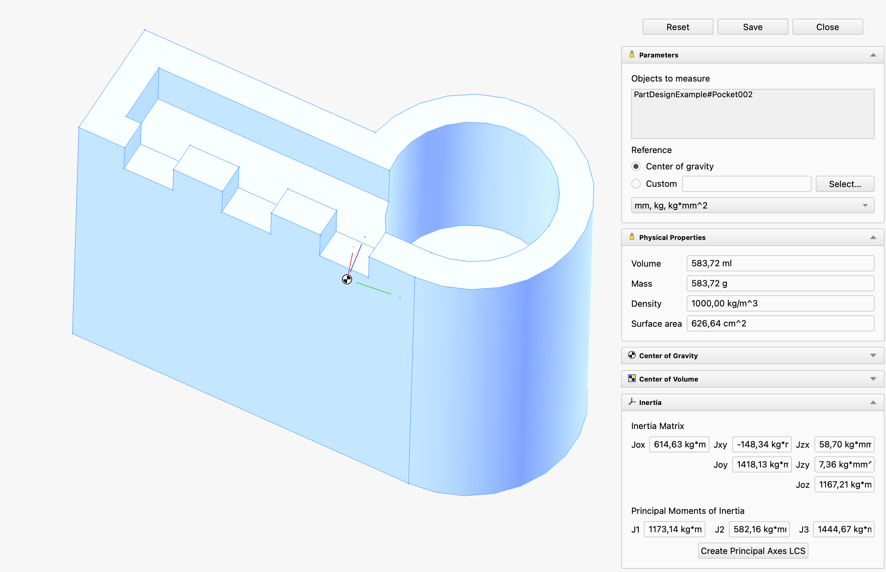 |
부품 및 조립체의 부피, 질량, 표면적, 무게중심, 부피 중심 및 관성 모멘트를 계산하는 |

|
Click on the image if the animation does not start. |
The |
Further Core improvements
- The search bar in the
 Preferences is now able to search through tooltips, dropdown values, checkboxes and group titles. Pull request #24283
Preferences is now able to search through tooltips, dropdown values, checkboxes and group titles. Pull request #24283 - The
 Measure tool now has the option to display the measured result of circular elements as diameters instead of radii. Pull request #24853
Measure tool now has the option to display the measured result of circular elements as diameters instead of radii. Pull request #24853 - The Measure tool now supports the measurement of the radius and diameter of cylindrical faces. Pull request #27044
- On macOS the .FCStd files now support the native QuickLook extension to show a thumbnail of the file in the finder and the full preview. Pull request #25239
- The Measurement units can now be converted and viewed on the fly. Pull request #27462
- The Measure tool now keeps the selected display unit with the measurement object, so changing units updates the task panel result and 3D label immediately. Pull request #29157
- The Measure tool can now report the radius and diameter for circular faces in addition to the existing measurement types. Pull request #27415
- The Measure tool now displays area units using unicode superscripts. Pull request #28044
- Macros now support directories to collect the files associated with them. Pull request #27005
- The macro dialog and the Open macros folder command now open the configured macro path instead of the default macro directory. Pull request #29224
- The broken built-in macro debugging actions now show a message directing users to the remote debugger workflow instead of implying breakpoint debugging is available there. Pull request #29889
- The Measure tool can now report the radius and diameter for spheres and toruses. Pull request #29369
- The Measure tool now supports curved faces in Distance mode. Pull request #29367
- The appearance and placement of the Angle Measurement arrows was significantly improved. Pull request #27135
 Box Element Selection now takes into account the
Box Element Selection now takes into account the  selection filters. Pull request #28982
selection filters. Pull request #28982- The Measure tool now supports circular faces for angle measurements. Pull request #29803
- The Measure tool now supports internal sketch faces. Pull request #29551
- The Quick Measure feature now shows the diameter of circular faces. Pull request #29385
- Selection filters can now select other entities within the viewer pick radius instead of immediately showing the blocked-selection state. Pull request #29705
- FreeCAD was adapted for OpenCascade 8 while keeping OpenCascade 7 compatibility, updating geometry, import/export, CAM, Sketcher, FEM mesh, and related code paths. Pull request #25502
- CMake now warns that Qt 5 support is deprecated and scheduled for removal, prompting packagers and builders to update to Qt 6. Pull request #30222
- On Unix-like systems, lock files now use owner-only permissions, and Coin image export avoids creating world-writable files. Pull request #30239
- The Conda release build preset now enables
FREECAD_WARN_ERROR, and related warnings were fixed so release CI catches new compiler warnings earlier. Pull request #30228 - The
 Transform tool can now use the Center of mass / centroid mode with Links and Part containers. Pull request #30208
Transform tool can now use the Center of mass / centroid mode with Links and Part containers. Pull request #30208 - The Transform tool now snaps the dragger to the start and end points of an edge when hovering near them, in addition to the existing edge center snap, while preserving the dragger orientation aligned to the edge. Pull request #30213
- The Transform custom dragger mode now supports selecting an object in the Tree View to use its placement as the dragger reference, in addition to picking elements in the 3D View, and no longer stays active when switching back to another dragger mode. Pull request #30943
- Toponaming support was improved for the Python API so that add-ons can be more stable in terms of TNP. Pull request #24632
- The JT file importer was improved, including support for JT 10.x files. Pull request #29768
- The bounding box feature used in several ways including the Fit Selection tool and sketch edit mode was reworked. Pull request #26291
API
Removed Python API
Changed Python API
New Python API
- A Python typing stub generator was added for FreeCAD's C++/PyCXX API surface, using source-adjacent .pyi inputs and smoke checks to keep generated stubs valid. Pull request #29334
Start
Addon Manager
Further Addon Manager improvements
- Duplicate disabled addon notices are now suppressed when the same disabled addon is discovered from both the user Mod directory and an additional flat module path. Pull request #29380
- The installed mods list in the About → Version information is now sorted alphabetically. Pull request #29325
Assembly Workbench
Further Assembly improvements
- Solver messages (overconstraint reports) were added to the Assembly task panel. Pull request #24623
- A new command has been added to select all joints associated with a chosen component. Pull request #27530
- A button was added to rotate joint offsets by 90 degrees. Pull request #29717
- Editing sketches from assemblies no longer briefly activates the sketch's source document or crashes when leaving the Assembly context. Pull request #29271
- Simulations now offer export to video format. Pull request #25307
- Exploded View can now be created temporarily. Pull request #25456
- Simulation export formats were improved. OpenCV was replaced by PyAV. WebM video format was added for cases when codec is available. The Save File dialog now also automatically appends the extension based on the selected file type. Pull request #30333
- The Edit Joint command was added to the context menu for joints. Pull request #30991
- A Snapshot feature was added making it possible to save and restore the current assembly state (placement and visibility). Pull request #25384
BIM Workbench
- ToDo (last check: 20260708, #31168):
- A BIM Report command has been added. It uses an SQL-like query language to select, filter, and aggregate data. Pull request #24078
- Removing a wall base now preserves the wall's placement and parametric dimensions for supported straight Draft or Sketch bases, and warns before removing unsupported complex bases. Pull request #24550
- Walls can now be created without a base object by default, with the selected wall baseline mode remembered in preferences. Pull request #24595
- The BIM Project command was removed from the toolbar, moved to the Utils menu, renamed for IFC-project clarity, and the Setup Project dialog now defaults to non-IFC-native projects. Pull request #25086
- The BIM toolbar layout was decluttered by grouping related commands, removing the Shape from Text and BIM Views entries from the default toolbar, and rearranging common drafting and copy tools. Pull request #25147
- A BIM Covering command has been added. It can apply finishes like flooring, wall cladding, ceiling tiles, or façade panels to existing geometry. Pull request #27222.
- BIM Windows now include a Sliding Door preset whose opening follows the
Openingproperty, and the Tree View context menu can invert the sliding direction. Pull request #27375 - BIM Windows now provide a task-panel options box for editing common window properties with expression-aware fields and a cancel action. Pull request #27381
- BIM Window types can now use LinkGroups, avoiding out-of-scope subvolume warnings while preserving unset base-object properties. Pull request #27420
- Walls now provide task-panel options for common wall properties, and the same quick-access task-box framework was extended to other BIM objects. Pull request #26758 and Pull request #27746
- BIM link handling was refactored, and the new Make Link command creates an
App::Linkand immediately starts a move operation for BIM workflows. Pull request #28104 - Sites now provide task-panel options for several site properties. Pull request #28504
Further BIM improvements
- Native IFC projects now also support a relative path to the IFC file. Pull request #24190
- BIM Nudge shortcuts now use Alt combinations to avoid conflicts with existing shortcuts. Pull request #28036
- Native IFC objects now expose the full active-schema class list for their object type in the
IfcClassproperty, including IFC2X3 type families. Pull request #28994 - Stair railings now follow stair visibility changes, including visibility inherited from parent objects such as levels. Pull request #29173
- The endpoints of walls without a base have been made editable with the Draft Edit command. Pull request #29860
- DrawingView cut lines now use the default line width and cut areas line thickness ratio preferences for thicker cut-line output. Pull request #30149
- IFC import now treats a multicore preference value of 0 as disabled before creating the IfcOpenShell geometry iterator, avoiding invalid worker counts when multicore processing is turned off. Pull request #30201
- The classification systems download URL was updated. Pull request #30247
- In the top part of the BIM Views Manager a Height column has been added. The Level column has been relabeled to Elevation. Pull request #30420
- Status Bar input hints were added for BIM tools. Pull request #30511
CAM Workbench
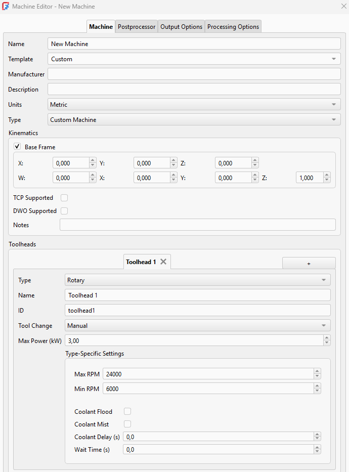 |
Machine Library and Editor were added to the CAM Preferences. Machine-based postprocessing was also added. Machine definitions can also be implemented as add-ons.
Pull request #26533, Pull request #27507 and Pull request #28405 |
Further CAM improvements
- The G-code export dialog now shows line numbers. Pull request #23862
- The MillFace operation was reimplemented with significant improvements as MillFacing. Pull request #24367
- SimpleCopy now allows multiple selection of operations. Pull request #24297
- OCL Adaptive Algorithm was added to the Waterline operation. Pull request #23149
- The Sorting Mode property was added to Profile and Pocket operations, allowing optional shape processing following the order of shape selection. Pull request #27410
- Support for rest machining was added to the Adaptive operation. Pull request #27908
- Hidden Approximation property was added to the DressupTag operation. It may significantly reduce the number of commands if the path contains non-horizontal arc moves (e.g., helix path). Pull request #28502
- Tapping was removed as an experimental feature and consolidated into Drilling as a new strategy. Pull request #27506
- Circular Hole operation was significantly improved, including a new C++ 2-Opt TSP solver with Python bindings for improved hole sorting performance as well as new sorting modes and manual reordering in the GUI. Pull request #23093
- New style LineZFollow was added to the LeadInOut operation. It can be used as a replacement for ArcZFollow, as simpler and requiring less computation. Pull request #27986
- The RampEntry dressup can now be applied to operations that already use a LeadInOut dressup. Pull request #28496
- It is now possible to manually set RetractThreshold in Profile and Pocket operations. Pull request #21738
- Manual selection of faces or edges for Drilling or Helix Drilling operations is now possible. Pull request #27494
- Helix operation, helix and spiral generators were improved to provide better results and allow more control. Pull request #21971
- Auto-select for drillable faces was optimized and can now find cylinder faces that have more than 3 edges. Pull request #27585
- The Optimize Linear Paths option was added to the Waterline OCL Adaptive Algorithm to remove unnecessary co-linear points from G-code output. Pull request #27040
- The new CAM simulator was integrated as an MDI widget into the main window. Pull request #22204
- The Copy Operation tool can now copy all operations and do it recursively. Pull request #24819
- The Toggle Operation tool now supports Job and Operations groups. Pull request #24872
- It is now possible to cancel G-code export. Pull request #25273
- Tolerance can now be set for Tag Dressup, Engrave, and Deburr operations to change the precision of segmentation of complex shapes while creating a path. Pull request #26127 and Pull request #26128
- The Engrave operation can now use arc approximation for complex curves, reducing G-code command count and producing smoother G2/G3 output where applicable. Pull request #29528
- Adaptive operation now automatically picks the diameter of the helix entrance. Pull request #23980
- The Adaptive operation now rejects invalid lead-in start points more reliably, preventing short slotting moves near inside corners that could violate the configured step-over. Pull request #29971
- CAM task panels now support selecting shapes from different objects. Pull request #22304
- Vcarve routing is now improved using "virtual edge backtracking". Pull request #25049
- It is now possible to postprocess only selected Operations from the Job and select operations inside Dressup. Pull request #22764
- The loop selection tool was improved and now returns the wire if edge(s) selected and other methods failed. Pull request #24185
- The loop selection tool can now find several horizontal wires when two or more selected edges do not belong to the same wire. Pull request #27497
- The loop selection tool can now select all edges from a selected shape when no subelements are selected. Pull request #29523
- A cooling feature was added to the Kinetic postprocessor. Pull request #25022
- The Units (Metric/Imperial) property was added to ToolBits. Pull request #25783
- The new CAM simulator now uses the same ortho/perspective view mode and navigation style as the 3D View. Pull request #23073
- The Pocket operation can now handle horizontal edges in addition to faces. Pull request #27750
- The Op Final Depth property of the Engrave operation now has a better default value depending on stock and engraving shape. Pull request #26543
- Start Point can now be set from the task panel for Profile and Pocket operations. Pull request #29502
- The Circular Hole Base feature used to select Base Geometry for some operations now shows position and blind state (for cylinder faces) in addition to face name and diameter. Pull request #27869
- CAM operations now recover more gracefully when linked Base Geometry becomes invalid: the path is cleared, the operation is marked with an error state, and invalid Base entries can be removed from the task panel. Pull request #27559
- The Helix operation now has the Helix Max Ramp Angle property while Helix Pitch was renamed to Helix Max Pitch. Pull request #29286
- The Zig Zag Angle property of the Pocket operation was renamed to Angle. It is now hidden if the selected pattern is Offset. Pull request #26842
- A new tool was added to allow mirroring dressups. Pull request #21820
- A rapid move from Clearance Height to Safe Height was added at the beginning of the Slot operation's G-code. Pull request #25845
- The Slot operation now handles perpendicular and start-to-end paths for multiple edges or faces more reliably, supports straight edges and non-horizontal arcs, and clears invalid paths when a slot cannot be created. Pull request #25090
- The Slot operation task panel now includes the CutPattern option, whose values were renamed to Bidirectional and Directional; the removed LayerMode behavior now matches other operations' step-down handling. Pull request #25867
- The CAM context menu was improved. Pull request #26492
- Engraving has two new properties: Pattern (allows swapping the direction after step down to exclude retraction) and Reverse (forces direction change). Pull request #22226
- Linking now considers the tool shape. Pull request #28180
- The Array tool's Jitter feature was improved. Pull request #26326
- The HandleMultipleFeatures feature can now process more cases for the Area operation. Pull request #26867
- The DressupTag tool can now automatically place tags for several closed paths. Pull request #22468
- The DressupTag tool now scales better with many edges. Pull request #29094
- The Z Depth Correction Dressup now shows a warning instead of an error when the path is outside the probe area. Pull request #28582
- The Adaptive operation now uses helix generator to create a helix entry. Helix properties were moved to the Adaptive Helix Entry group. There are also new property names Helix Max Ramp Angle and Helix Max Pitch. Pull request #22357
- A new Rotary Surface operation was added for 4th axis surfacing. Pull request #29751
- Toolpath rendering for multi-revolution rotary moves now uses the full angular travel, avoiding coarse display segments on long G0/G1, G2/G3, and drilling-cycle rotations. Pull request #29707
- The job creation and editing dialogs were improved. Job creation now includes a unit schema selector, template description was added to the json and there is a machine selector, as well as a button to create new machines on the General tab. Several other widgets within those panels were also enhanced. Pull request #29861
MachineState.G0F, and.ReturnModewere added for Drilling commands. Pull request #29892- CAM drilling cycle expansion now uses MachineState for more accurate machine state tracking while expanding drilling cycles. Pull request #30112
- The Profile and Pocket linking options now include collision-avoidance strategies for using retract height, clearance height, line-of-sight checks, tool diameter, or tool shape. Pull request #29983
- The Linking generator was added to the Engrave and Deburr operations to use the safe height instead of clearance height for linking moves. The Linking Mode and Safety Margin options were added to the task panels, also for Drilling and Helix operations. Pull request #29959
- The loop selection tool can now handle horizontal faces. Pull request #26786
Draft Workbench
- ToDo (last check: 20260708, #31057)
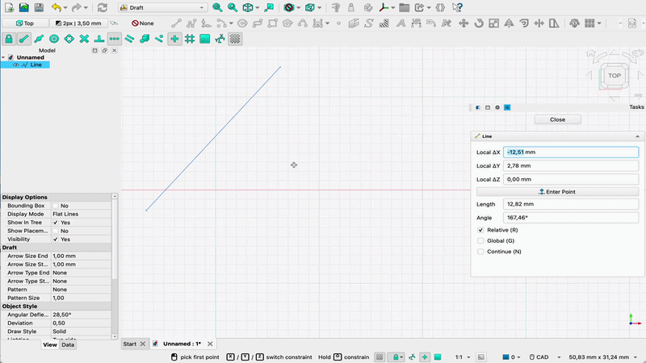 Click on the image if the animation does not start. |
Typing a value into any X/Y/Z/Length/Angle input field in Draft and BIM task panels now automatically locks that field, preventing the 3D cursor from overwriting the entered value. Locked fields are indicated by a lock icon in the spinbox, constrain the cursor in the 3D view to the locked values, and can be unlocked by clicking the icon, double-clicking the field, or clearing the value. |
- Draft snapping now supports B-spline knots. Pull request #26571
- Draft in-command shortcut preferences can now contain multiple characters, making localized single-character shortcuts possible. Pull request #26950
- The Working Plane command now moves the working plane origin to a pre-selected vertex without changing its orientation. Pull request #27979
- Draft angular dimensions now create extension lines. Pull request #27987
- Polar Array and Circular Array are now aware of the active working plane. Pull request #28324
- SVG import can now approximate suitable curves to arcs and lines. Pull request #29142
- SVG import now supports UTF-16 encoded files, such as SVG files generated by some Windows applications. Pull request #29244
- Draft angular dimensions now honor overshoot settings. Pull request #29298
- Draft Annotation and Modification tools now use input hints. Pull request #29649, Pull request #30436 and Pull request #30437
- A Draft Hatch can now be applied to multiple objects and/or individual faces belonging to one or more objects. Pull request #30578
Further Draft improvements
- A check to prevent consecutive identical points has been added to the Draft Line, Draft Wire, Draft BSpline and Draft BezCurve commands. Pull request #29372
- Draft Trimex now reports unsupported sketch selections before opening the task panel, avoiding a misleading no-op workflow. Pull request #29845
- For closed wires and B-splines Draft Edit offers the new Set Point as First option in the node context menu. Pull request #30830
FEM Workbench

|
Several new tools extending the capabilities of the |
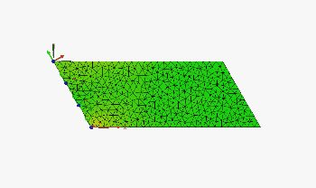 Click on the image if the animation does not start. |
Local coordinate system transformations can now also be applied to edges of 2D models. |
Further FEM improvements
- The
 Electric Charge Density load now has a Concentrated checkbox in the Total Source mode to use concentrated instead of distributed load (making it also applicable to edges and vertices) with CalculiX. Pull request #25237
Electric Charge Density load now has a Concentrated checkbox in the Total Source mode to use concentrated instead of distributed load (making it also applicable to edges and vertices) with CalculiX. Pull request #25237 - The
 FEM results objects now support the animation of half cycles in addition to reversed full cycles. Pull request #24129
FEM results objects now support the animation of half cycles in addition to reversed full cycles. Pull request #24129 - The
 Section Print feature now supports 2D models and electric flux in electrostatic analyses. Pull request #25081
Section Print feature now supports 2D models and electric flux in electrostatic analyses. Pull request #25081 - The Neumann mode of the
 Electrostatic potential boundary condition can now be used to apply a magnetic flux density boundary condition. Pull request #25897
Electrostatic potential boundary condition can now be used to apply a magnetic flux density boundary condition. Pull request #25897 - In Z88 exports, materials and elements without references can now be used as default values for mesh elements that do not have explicit references. Pull request #29185
- The Displace Mesh property was added to the refactored
 CalculiX solver, making it possible to view true scale deformation of the mesh without having to use the Warp filter. Pull request #27786
CalculiX solver, making it possible to view true scale deformation of the mesh without having to use the Warp filter. Pull request #27786 - The addArrayFromFunction Python function was added, making it possible to create custom arrays based on the
 pipeline fields. Pull request #26076
pipeline fields. Pull request #26076 - A context menu command to
 clear mesh groups was added. Pull request #27945
clear mesh groups was added. Pull request #27945 - A log verbosity preference was added for
 Elmer. Pull request #28058
Elmer. Pull request #28058 - The None Field Color property was added to the results pipeline and filters to set the color when the displayed field is None (can be helpful e.g. when using the Glyph filter). Pull request #28028
- All solver commands are now always shown (even if a given solver is not installed) and are grouped in the toolbar as well as in the menu. The default icon in the toolbar depends on the default solver selected in the Preferences. Pull request #28144
- Material assignments are now read from the CalculiX's .frd results files. They can't be accessed in FreeCAD yet, but they can be visualized in ParaView upon conversion to .vtm format. Pull request #27847
- The
 Non-linear mechanical material objects are now grouped under the
Non-linear mechanical material objects are now grouped under the  Solid Material objects. The Geometrical Nonlinearity and Material Nonlinearity properties are now Boolean. The latter is enabled by default and only applied if any material in the analysis has a non-linear mechanical material object assigned to it. Otherwise, it is ignored. Pull request #27862
Solid Material objects. The Geometrical Nonlinearity and Material Nonlinearity properties are now Boolean. The latter is enabled by default and only applied if any material in the analysis has a non-linear mechanical material object assigned to it. Otherwise, it is ignored. Pull request #27862 - The Z-refinement algorithm of
 Netgen, allowing the creation of extruded meshes, now also supports shells. Pull request #28204
Netgen, allowing the creation of extruded meshes, now also supports shells. Pull request #28204 - It is now possible to edit the input files for the meshers to add some custom commands for mesh generation, similar to what could already be done for the solvers. Some general preferences of the FEM Workbench were improved too. Pull request #27942
- The Electrostatic potential boundary condition is now named Electromagnetic boundary condition. Some smaller renames were are done. Pull request #27614
- The
 Z88 solver was refactored. It can be used with both open-source versions of Z88 - Z88OS and Z88Adria. It supports several element types and basic features for linear analyses. Pull request #28944
Z88 solver was refactored. It can be used with both open-source versions of Z88 - Z88OS and Z88Adria. It supports several element types and basic features for linear analyses. Pull request #28944 - The Iterations Control Parameter Field property was added to the CalculiX solver to allow adjusting the convergence criteria. Pull request #29227
- The Beam Reduced Integration property of the CalculiX solver was replaced by the generalized Reduced Integration property that replaces standard solid, face (shell, 2D) and beam elements with their reduced integration counterparts. Pull request #29223
- The refactored CalculiX solver is now used by default. Pull request #29220
- The Section print feature can now be used with the Z88 solver. Pull request #29188
- Materials now have the Material Name property, making it easier to identify the actual materials represented by the material objects in the Analysis container. Pull request #29609
- Three new
 FEM examples were added for CalculiX: basic 1D fluid network, axisymmetric shaft and plane stress plate with a hole. Pull request #29697 and Pull request #29711
FEM examples were added for CalculiX: basic 1D fluid network, axisymmetric shaft and plane stress plate with a hole. Pull request #29697 and Pull request #29711 - Several CalculiX preference labels were changed for clarity, including geometrical nonlinearity, advanced solver controls, eigenmode count, and frequency bounds. Pull request #30099
- The Data and extractions widget no longer raises an exception if the pipeline is empty. Pull request #29739
- Displacement boundary condition now correctly writes the rotations in radians for the CalculiX solver. Pull request #29689
- Node indexing was improved for the Z88 solver. Pull request #29606
- The Groups of Nodes property was removed to better handle groups in meshers. Pull request #29440
 Force load now uses the global placement of the reference geometry for the force direction (for example, if the reference is inside a Part container). Pull request #29513
Force load now uses the global placement of the reference geometry for the force direction (for example, if the reference is inside a Part container). Pull request #29513- The dependence of FEM examples on workbenches other than Part was removed. Pull request #29488 and Pull request #29438
- For the Mesh refinement command, the expected mesh property was changed to Mesh Refinement List. Pull request #29554
- The Z88 solver can now use different cross sections assigned to different truss elements. Pull request #29379
- Pressure load now takes into account the shell thickness for plane stress models solved with the Z88 solver. Pull request #29377
- The Z88 solver now uses materials and elements without references as default. Pull request #29185
- The legacy SolverCalculiX object created with old FreeCAD versions is now updated to the new solver object. Pull request #29102
 Fixed boundary condition now works properly (constrains only the available DOFs) for plane stress, plane strain, axisymmetric, membrane and truss elements. Pull request #28986
Fixed boundary condition now works properly (constrains only the available DOFs) for plane stress, plane strain, axisymmetric, membrane and truss elements. Pull request #28986- Some redundant log messages generated during the mesh element search stage for the CalculiX solver were removed. Pull request #28049
- The legacy get_ccx_version check searching for a very old version of CalculiX was removed. Pull request #28194
- Transparency was removed from equation icons to make their non-grayed-out state clearer. Pull request #28193
- The results pipeline no longer crashes if its data is a mutiblock with a null block. Pull request #28171
- The pipeline frames now include time/frequency units for the refactored CalculiX solver. Pull request #27845
- The clipping plane command can now be enabled in feature edit mode. Pull request #25145
- Mesh error handling was improved for the solvers, including proper error messages when there's no mesh or multiple meshes are present. Pull request #29186
- The names of objects were improved, mainly by removing the redundant word "constraint". Pull request #30665
- A new electrostatic spark gap FEM example was added for CalculiX and Elmer. Pull request #30928
- The default pressure value was changed to 1 MPa. Pull request #31036
- The getNodeColor() and getElementColor() methods were implemented. Pull request #30726
- Two new FEM examples were added for CalculiX involving radiation
 heat flux - one for radiation to ambient and one for surface-to-surface (cavity) radiation. Pull request #31171 and Pull request #31175
heat flux - one for radiation to ambient and one for surface-to-surface (cavity) radiation. Pull request #31171 and Pull request #31175
Inspection Workbench
Further Inspection improvements
Material Workbench
Further Material improvements
- The Material-Metals database has been extended with additional copper and copper-alloy materials. Pull request #25832
- Material assignment via Std SetMaterial now wraps changes in a transaction, replacing the "Close" button with "OK" and "Cancel" to enable proper undo support. Pull request #27910
- Material library paths using symbolic links are now handled correctly by the Materials Editor and material-loading API calls. Pull request #28500
Mesh Workbench
Further Mesh improvements
- A status widget now displays the reason when adding a triangle to a mesh fails. Pull request #29945
OpenSCAD Workbench
Further OpenSCAD improvements
Part Workbench
Further Part improvements
- A new method has been added to split a B-spline curve into two curves at a given parameter. Pull request #26716
- Extruding text sketches in the Part Workbench is now faster, especially for sketches that produce many wires. Pull request #28344
- The attachment system now correctly offers modes such as XY parallel to Plane when selecting origin datum planes through an Origin object. Pull request #28958
- Loft creation now allows valid profile combinations that share the same center of gravity while still guarding against the crash case fixed for duplicate profiles. Pull request #29982
- A unified face maker was added to replace the current multi-face maker approach with a single algorithm handling all planar and non-planar cases. This is a new default face maker. Pull request #28788
- The Project on Surface tool now accepts internal sketch faces as input for projection on a surface. Pull request #30425
Part Design Workbench

|
Support for cosmetic threads (thread textures) was added to the |
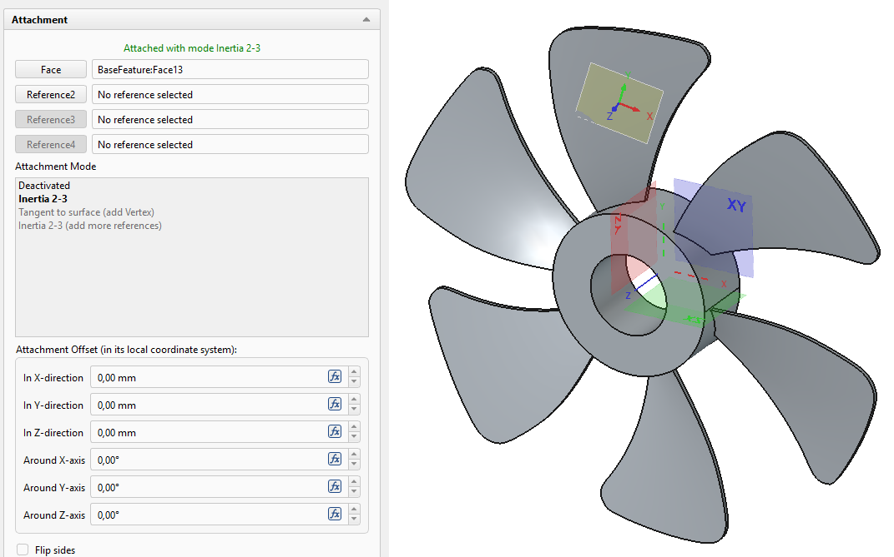 |
Creating |
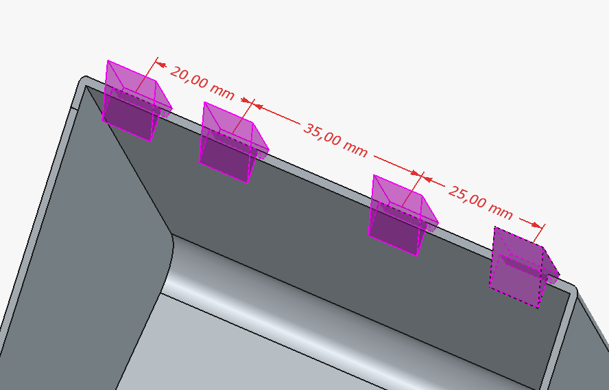 |
Pattern tools now use OVP (On-View Parameters) fields to control spacing overrides implemented in the previous release. |
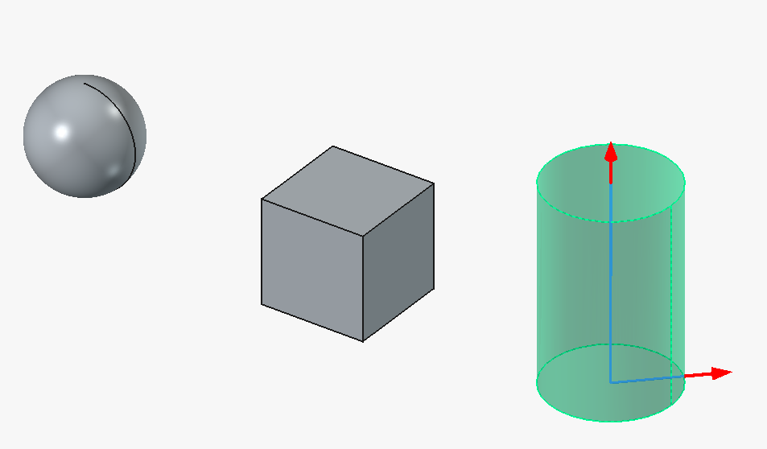 |
Interactive draggers were added to the Sphere, Box and Cylinder (additive and subtractive) primitive tools. |
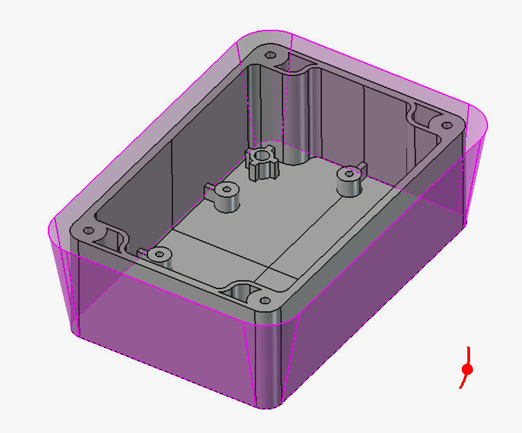 |
An interactive dragger was added to the |
Further Part Design improvements
- Interactive draggers now support configurable coarse snapping, allowing larger steps by default with a modifier key (e.g. Shift) for fine movement; the snap step sizes and modifier key are configurable in the preferences. Pull request #28384
- Multi-selection is now supported for the Additive and Subtractive Pipe path edges list. Pull request #27962
- Errors from Part Design dress-up features such as chamfers and fillets are now shown in the notification area and Report view instead of a popup dialog, allowing users to stay in the task panel. Pull request #28131
- Now unhiding a Body with no visible features also unhides its tip. Pull request #24887
- Changing a Pad to the Up To Face type no longer crashes if the feature is not inside a Body; an error is reported instead. Pull request #30022
- Pressing Space on an element selected from the 3D view (e.g. from selecting a face) now toggles the visibility of the entire PartDesign Body instead of the last feature, making it easier to show or hide bodies in assemblies or files with multiple bodies. Selection in the Tree view still toggles the selected object. Pull request #29110 and Pull request #30231
- Input hints were implemented for the interactive control draggers. Pull request #29631
- SubShapeBinder now uses the BuildFace face maker to handle overlapping geometry. Pull request #29249
- A Fuzzy Tolerance property was added to override the default fuzziness/tolerance for boolean operations determined from the size of the input shapes. Pull request #29984
- Suppressing a feature now doesn't result in unnecessary recomputes and thus works instantly. Pull request #29219
- Strikethrough was added to labels of suppressed features. Pull request #27808
- Transformation tools now have better error handling for empty features. Pull request #26565
- The Helix tool has better error handling for multiple solids cases now. Pull request #29339
 Part Design Bodies used inside a
Part Design Bodies used inside a  boolean feature are now temporarily made visible when activated for editing, and hidden again when deactivated, removing the need to manually toggle visibility or use a SubShapeBinder workaround. Pull request #30002
boolean feature are now temporarily made visible when activated for editing, and hidden again when deactivated, removing the need to manually toggle visibility or use a SubShapeBinder workaround. Pull request #30002
Points Workbench
Further Points improvements
Reverse Engineering Workbench
Further Reverse Engineering improvements
Robot Workbench
Further Robot improvements
Sketcher Workbench

|
Thanks to AstoCAD, a |
 Click on the image if the animation does not start. |
Thanks to AstoCAD, a new |
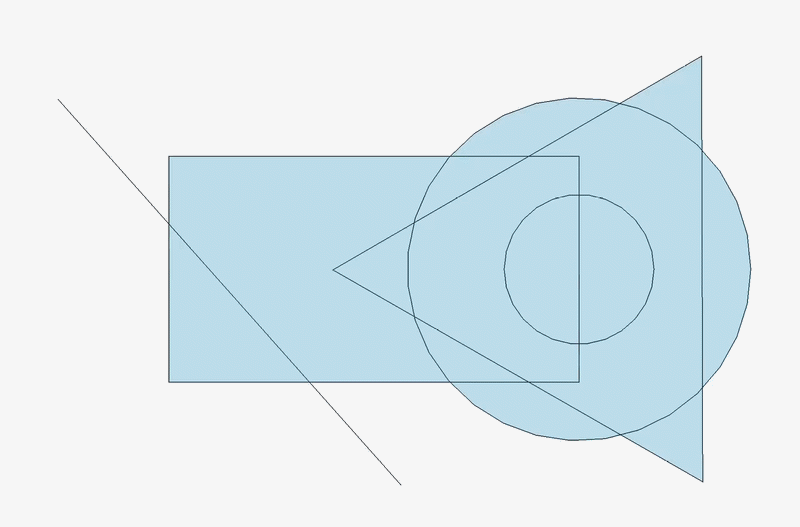 Click on the image if the animation does not start. |
Internal face generation now correctly handles complex overlapping geometry such as three or more intersecting circles, where previously some face regions were not generated at all. |

{kind=link}
{kind=link}
{kind=link}
{kind=link}
{kind=link}
{kind=link}
{kind=link}
{kind=link}
{kind=link}
{kind=link}
{kind=link}
{kind=link}
{kind=link}
{kind=link}
Further Sketcher improvements
- It is now possible to import Bézier and Offset curves as
 External geometry. Pull request #25144
External geometry. Pull request #25144 - The Merge Sketches command now imports external geometry when possible, remaps constraints that reference external geometry, and creates the merged sketch inside the shared Body when all source sketches belong to one. Pull request #29497
- Copy, cut and paste now support text geometry and
 Group constraints. Pull request #28728
Group constraints. Pull request #28728 - When creating or editing circular dimensions, it is now possible to switch between the radius and diameter type. Pull request #26794
- The constraint list now displays the type of the constraint in the name. Pull request #26797
- A new selection mode was added to
 Symmetric constraint. Now it is also possible to select an element (line, arc, or open B-spline) and a symmetry line. Pull request #25525
Symmetric constraint. Now it is also possible to select an element (line, arc, or open B-spline) and a symmetry line. Pull request #25525 - Internal faces are now visible from both sides of the sketch plane, and multi-selection highlighting with Ctrl+click now correctly highlights all selected faces. Pull request #28655 and Pull request #28651
- Internal face generation now handles self-intersecting B-splines and dangling edges, while keeping stable mapped names for split edge fragments. Pull request #28964
- Double-clicking a geometric constraint now triggers its rename. Pull request #27678
- Double-clicking selection now also works with external geometry. Pull request #28105
- The Grid and Make Internals properties are now enabled by default for new sketches, and a grid transparency preference has been added. Pull request #28771 and Pull request #28791
- Sketcher now avoids unnecessary solves when dragging constraints, deleting sketch elements, and leaving dimension tools, improving responsiveness in these workflows. Pull request #28652
- The Sketcher AutoColor property now immediately applies preference colors to existing sketches when enabled, without requiring the document to be saved and reopened. Pull request #30185
- Selected distance constraints (point-line, circle-circle, and circle-line) now use orientation to prevent flipping. Pull request #26518
- Line-circle and line-arc tangent constraints now use computed orientation, keeping tangent-constrained geometry on the intended side while solving. Pull request #29015
- The Create symmetry constraints option of the
 Symmetry tool was improved to avoid overconstraints. It is now also enabled by default. Pull request #28118 and Pull request #28319
Symmetry tool was improved to avoid overconstraints. It is now also enabled by default. Pull request #28118 and Pull request #28319 - Copying Sketcher geometry as Python code now keeps more coordinate precision, reducing broken closed profiles after copy and paste. Pull request #29211
- There is now a Cancel button, making it possible to discard modifications in a sketch. Pull request #29337
 Horizontal Dimension,
Horizontal Dimension, Vertical Dimension, and
Vertical Dimension, and  Distance Dimension are now positioned better by default to avoid overlap with the lines being constrained. Pull request #29538
Distance Dimension are now positioned better by default to avoid overlap with the lines being constrained. Pull request #29538- Sketcher box selection now takes into account the selection filters. Pull request #28982
- Arc length dimensions are now positioned better for larger arc spans. Pull request #29594
- Dimension labels are now oriented based on the view rotation so that they won't get displayed upside down anymore. Pull request #29569
- OVP keyboard handling was improved: entering numbers, punctuation, deletion keys or pasted values switches directly to value editing, while holding Alt temporarily restores camera controls. Pull request #29477
- While entering OVPs for rectangles, lines, and slots, Sketcher now keeps the captured cursor direction after a length or angle value is set, preventing the preview geometry from flipping as the mouse moves. Pull request #24904
- The
 Text tool now stores only the font name in the document instead of an absolute local font path, improving file portability between systems. Pull request #28418
Text tool now stores only the font name in the document instead of an absolute local font path, improving file portability between systems. Pull request #28418 - A new preference was added to control the font type (in addition to font size) for labels. Pull request #26600
- Sketcher geometry now updates correctly after removing part of a constraint from a fully constrained sketch. Pull request #29812
 Angle dimension lines are now positioned better. Pull request #29630
Angle dimension lines are now positioned better. Pull request #29630- Arcs can now be selected directly while the Angle dimension tool is active, making it possible to create arc angle dimensions without first preselecting the arc. Pull request #29679
- The Sketcher Dialog has two new commands - to delete all constraints and to delete filtered constraints. Pull request #29993
- The Dimension tool now uses input hints. Pull request #30630
- The Point-On-Object constraint now supports autoconstraints along the line. Helper lines are displayed for it. Pull request #30332
- OVPs were added for arc of ellipse, hyperbola and parabola. Pull request #29318
- Input hints were added for B-spline tools. Pull request #30628
- Autoconstraints now work not only when creating geometries, but also when dragging them. Pull request #29771
- Selection filters now support internal sketch faces. Pull request #30259
- The
 geometry creation mode state is now remembered per sketch instead of per FreeCAD session. Pull request #30761
geometry creation mode state is now remembered per sketch instead of per FreeCAD session. Pull request #30761 - Icons of external geometries in the Elements panel now have a construction variant. Pull request #28507
Spreadsheet Workbench
Further Spreadsheet improvements
- The color picker was redesigned and has two buttons - for custom colors and for resetting. Pull request #28698
Surface Workbench
Further Surface improvements
TechDraw Workbench

|
Annotation tools have been reworked with improved rich-text annotation editing. Pull request #24624 |
Further TechDraw improvements
- Smooth edges in TechDraw are now rendered with a thin line as required by ISO drawing standards. Pull request #27747
- Section line font, font size, and arrow size in TechDraw Section Views are now configurable per view via view properties. Pull request #27521
- TechDraw angle dimensions now support displaying the supplementary angle (180° minus the measured angle) via a view property. Pull request #27055
- Scene drawing is now significantly faster. Pull request #25898 and Pull request #28702
- Rendered scene views now exclude viewer decorations such as the NaviCube from TechDraw scene captures. Pull request #28943
- Manual changes to TechDraw view and dimension X/Y position properties now take priority over snapping, and dimension snapping parameters are configurable in the preferences. Pull request #30154
- The Insert Active View task panel has been redesigned with improved spacing, a combobox for background style selection, and grouped crop settings that disable automatically when not in use. Pull request #28085
- There is now a context menu option to toggle grid for the active page. Pull request #29083
- Projected views of tori and similar concentric-arc shapes now preserve legitimate outline arcs instead of deleting them during duplicate-edge cleanup. Pull request #29637
- The default TechDraw page color in the FreeCAD Light preference pack is now white, avoiding gray page backgrounds when printing. Pull request #30129
- The task panel of the Balloon Annotation tool was polished. Pull request #28101
- The ASME ANSIB TechDraw template now has a transparent background, matching the other drawing templates. Pull request #30025
- Expressions can now be attached to any TechDraw template fields. Pull request #27117
Import and export
- Importing STEP, IGES and glTF files now shows progress feedback during the transfer. Pull request #27849
- XHTML/X3D export now uses more descriptive
DEFattribute names. Pull request #29980 - On Windows, DXF import now works when the file is in a folder whose path contains non-English characters. Pull request #30125